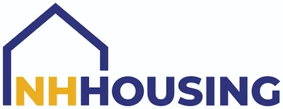
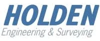
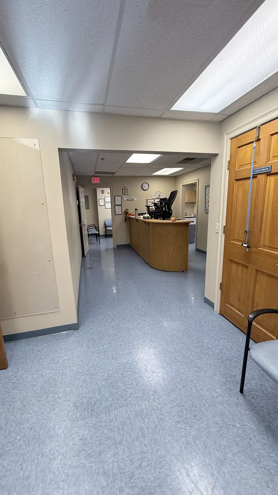
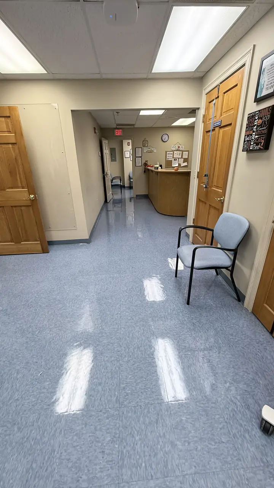
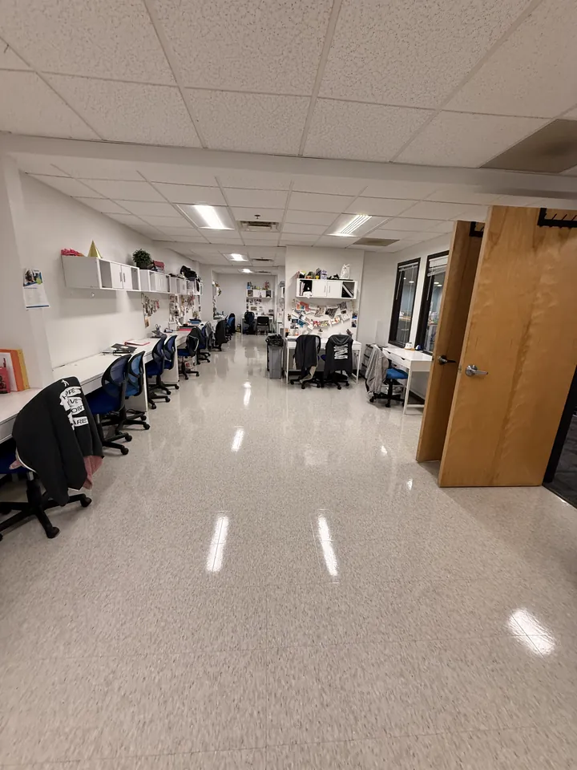
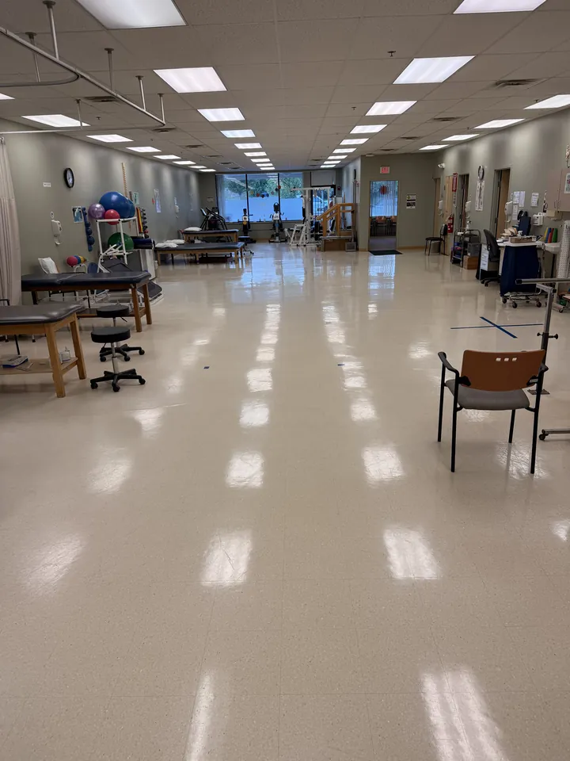

Limpieza comercial en Amherst, NH
Limpieza de instalaciones médicas, oficinas, alfombras y pisos para los negocios de Amherst, con un equipo local de Dracut, MA, a unas 21 millas.
Clientes · Amherst, NH
La confianza de organizaciones cerca de Amherst
Ya limpiamos para estas organizaciones cerca de Amherst:
-

-

Nuestro trabajo
Resultados reales para negocios cerca de Amherst
Fotos de nuestro propio equipo: decapado y encerado de pisos, limpieza de consultorios médicos y limpieza profunda.

Antes
Después

Nuestros servicios de limpieza en Amherst
Condado de Hillsborough · New Hampshire
Por qué las instalaciones de Amherst eligen Clau Cleaning Corp
Los negocios de Amherst sobre la Ruta 101A cuentan con un equipo de limpieza que llega a tiempo, siempre.
- Especialistas en consultorios médicos, instalaciones médicas y laboratorios
- Desinfectantes de grado hospitalario registrados por la EPA y microfibra codificada por color
- Aspiradoras de mochila HEPA y sistema de trapeado plano por color
- Plan de trabajo por escrito, servicio nocturno y un solo contacto
- Equipo y supervisores bilingües: inglés y español
- Más de 20 años limpiando en Massachusetts y New Hampshire
Instalaciones que limpiamos en Amherst
- Consultorios médicos y dentales
- Clínicas y hospitales
- Centros quirúrgicos y de imágenes
- Laboratorios médicos y de investigación
- Oficinas profesionales
- Concesionarios de autos y salas de exhibición
- Iglesias y salones parroquiales
- Escuelas y guarderías
Preguntas frecuentes
¿Ofrecen limpieza comercial en Amherst, NH?
Sí. Clau Cleaning Corp limpia consultorios médicos, clínicas, laboratorios, oficinas, concesionarios de autos, iglesias y escuelas en Amherst y en todo el condado de Hillsborough, New Hampshire. Nuestro equipo tiene base en Dracut, MA, a unas 21 millas.
¿Limpian consultorios y clínicas en Amherst?
Sí. Las instalaciones médicas son nuestra especialidad. Seguimos protocolos sanitarios con microfibra codificada por color y desinfectantes de grado hospitalario registrados por la EPA.
¿Ofrecen limpieza de alfombras y cuidado de pisos en Amherst?
Sí. Hacemos extracción con agua caliente, encapsulado, decapado y encerado, fregado y recubrimiento y pulido para edificios comerciales en Amherst. El trabajo de alfombras y pisos se cotiza por pie cuadrado después de una visita gratuita.
¿Cómo obtengo una cotización de limpieza en Amherst?
Llame al +1 978-328-2406 o complete nuestro formulario. Programamos una visita gratuita a su instalación en Amherst y enviamos una cotización por escrito en menos de un día hábil.
Ciudades cercanas que atendemos
¿Listo para una instalación más limpia y saludable?
Cuéntenos sobre su edificio: programamos una visita gratuita y le enviamos una cotización por escrito en menos de un día hábil.